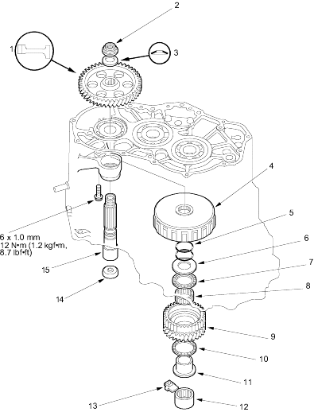

 |
- 1ST GEAR
- LOCK NUT (FLANGE NUT)
19 x 1.25 mm, 93 Nm (9.5 kgf/m, 69 lbf/ft), Replace
- CONICAL SPRING WASHER
Replace
- 1ST-HOLD CLUTCH
- O-RING, Replace
- THRUST WASHER
- THRUST NEEDLE BEARING
- NEEDLE BEARING
- 4TH GEAR
- THRUST NEEDLE BEARING
- 4TH GEAR COLLAR
- NEEDLE BEARING
- NEEDLE BEARING STOP
- ATF GUIDE CAP, Replace
- SUB-SHAFT
|